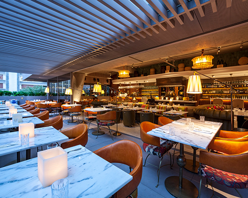
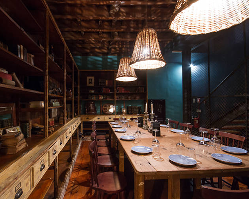
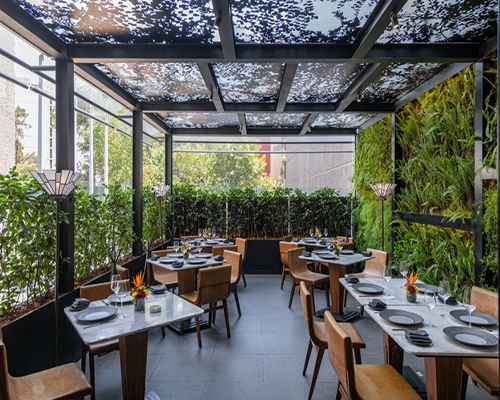
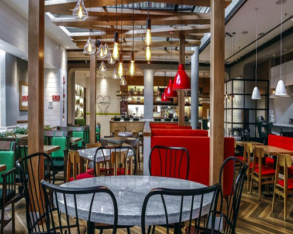

FRANQUIAS POR TODO O ESTADO, ESCOLHA A MAIS PRÓXIMA DE VOCÊ!
Saiba todos os restaurantes que estão disponíveis pelo Rio Grande do Sul.

(51) 3259-1229
Matriz Porto Alegre
(51) 3259-1229
Rua 24 de Outubro, 820

(54) 3120-8472
Franquia Gramado
(54) 3120-8472
Rua Augusto Zatti, 188

(54) 3022-7433
Franquia Bento Gonçalves
(54) 3022-7433
Av Dr. Antônio Casagrande, 423

(54) 3229-0149
Franquia Caxias do Sul